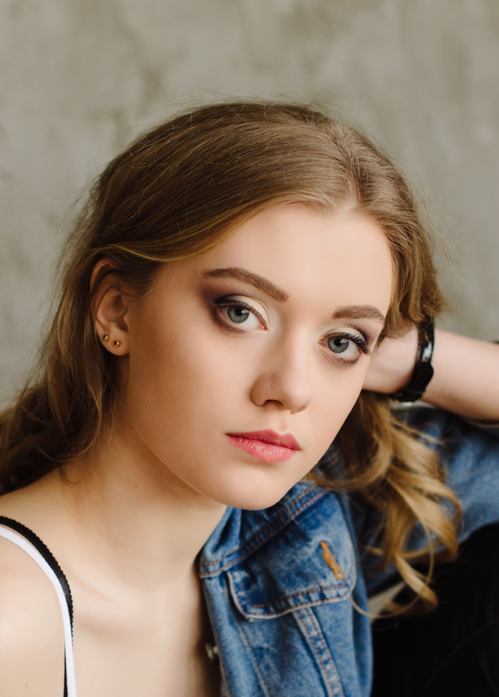

Dasiukevich Anastasiya
Student of physics faculty of Belarusian state university
Contact
- Minsk, Belarus
- Phone number: +375295535554
- Mail: nastya_d1199@mail.ru
ABOUT MYSELF
Positive, purposeful, sosiable person. Ready to study new and work hard to achive goals.
If i can't understand or do something i will spend a lot of time until it works right.
Responsible, will try to make task or work as well as it's possible. Like art, traveling and sport.
SKILLS
- Basics of Python
- Delphi
- Matlab and 3d modeling in Solidworks
WORK EXPERIENCE
No work experience
EDUCATION
- 2016-2020 student of physics faculty of Belarusian state university, major energy physics
- Spring 2019 successfully passed the course "Basics of Python"
- Autumn-winter 2019 studying in China
- Spring-summer 2020 online studying in China
- 2010-2015 finished art school
LANGUAGES
English level: Intermediate
Have experience of studying in English in China and translation of scientific articles.
Have friends in different countries, with whom actively communicate in English. In 2018 studied German. Now i'm studying Chinese.